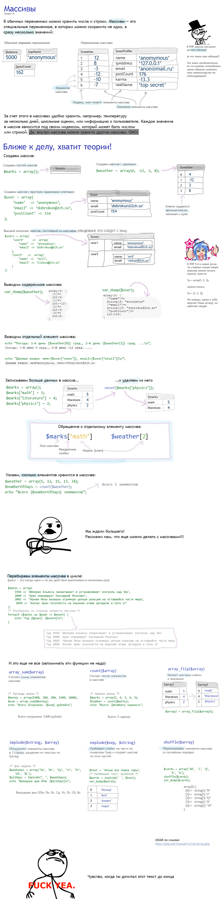
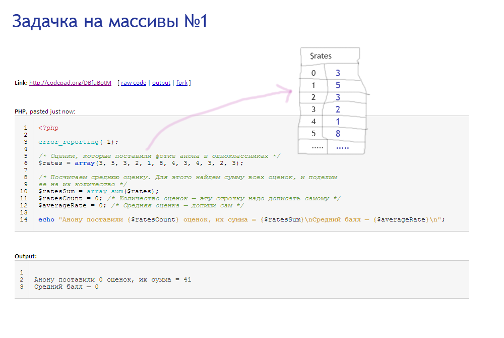
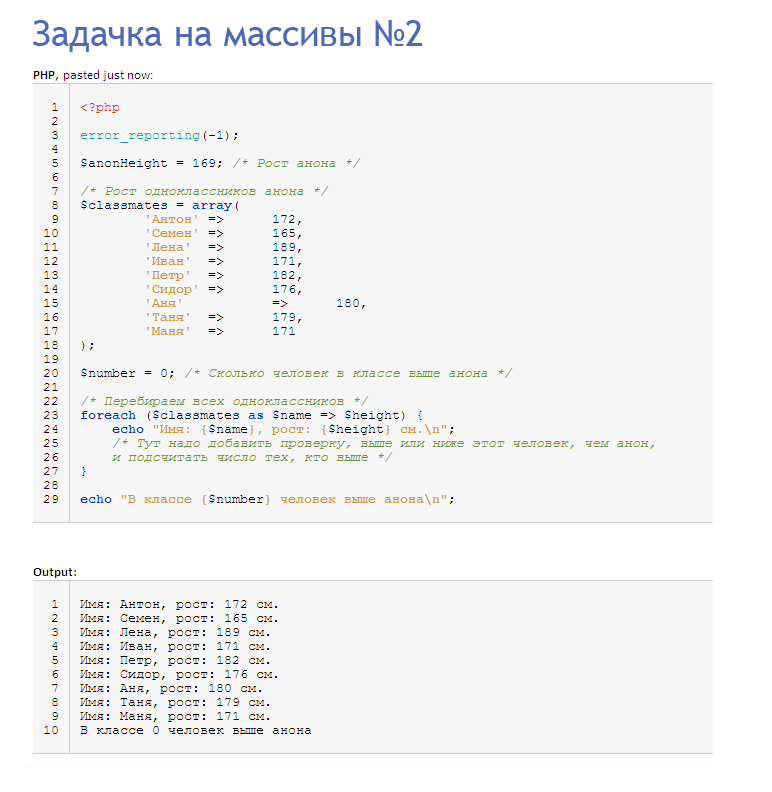
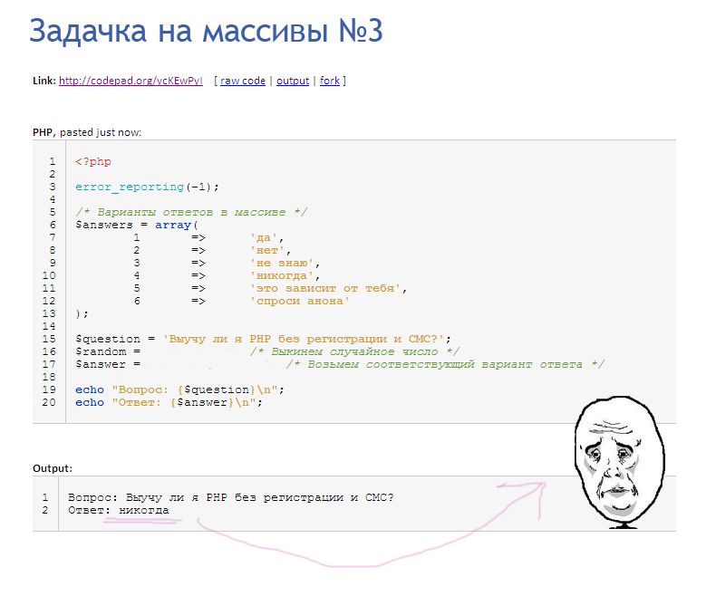
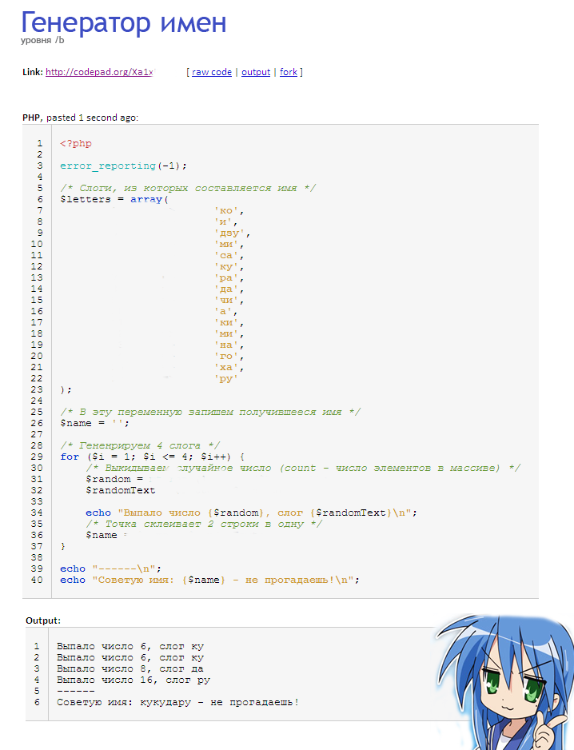

Сделал предыдущие задачи?
Тогда ты готов к чуть более сложной теории. Сейчас я тебе расскажу про переменные-массивы. К сожалению, без них никак-никак не обойтись. Посмотри объяснения на картинке — не бойся, все сразу понимать не нужно, просто попробуй прочесть.
Если прочел — переходи к задачам. Не бойся, они гораздо проще, чем теория.

$a = array(); /* Пустой массив */
$a = []; /* В PHP5.4 и старше вместо array() можно писать [] */
/* Массив, содержащий три строки с индексами 0, 1 и 2 */
$cars = ['Ford', 'Toyota', 'Tesla'];
/* Массив, содержащий 2 элемента c вручную указанными индексами */
$score = ['Ivan' => 100, 'Petr' => 400];
/* Массив, содержащий элементы с индексами 1, 2, 3, 10, 11 */
$x = [1 => 'a', 'b', 'c', 10 => 'd', 'e'];
var_dump($cars); /* выводит все */
echo "Иван набрал {$score['Ivan']} очков\n";
/* Индекс будет поставлен автоматически (в данном случае 3) */
$cars[] = 'Mersedes';
/* Индекс нового элемента указан явно */
$score['Vasiliy'] = 500;
$score['Ivan'] = 200;
unset($score['Ivan']);
foreach ($score as $name => $number) {
echo "$name набрал $number очков\n";
}
/* Если нам нужны только значения без индексов */
foreach ($cars as $car) {
echo "$car\n";
}
/* по значению */
if (in_array('Toyota', $cars)) {
echo "В массиве есть значение 'Toyota'\n";
}
/* по индексу */
if (array_key_exists('Ivan', $score)) {
echo "Есть элемент с индексом Ivan\n";
}
if (isset($score['Ivan'])) {
echo "Есть элемент с индексом Ivan и значение элемента не равно null\n";
}
Ссылки на мануал:
Итак, решим задачку:
Некто зарегистрировался в социальной сети, и там его фото поставили оценки (см. на картинке). Надо найти и вывести средний балл.
5.3 Возьми код по ссылке http://codepad.org/DBfuBotM и исправь его, чтобы он показывал правильный ответ.
Подсказка: чтобы узнать средний балл, надо сумму баллов поделить на их количество. Сумму значений можно посчитать через array_sum(), количество через count()
Что-то непонятно? Перечитай теорию, открой мануал, погугли.
5.4 Дан рост школьника и рост его одноклассников. Надо найти, сколько человек в классе выше, чем наш герой.
Для этого возьми код по ссылке http://codepad.org/UOaOEgAW и переделай его, чтобы считать сколько человек выше школьника.
Что-то непонятно? Перечитай теорию, открой мануал, погугли. Подсказка: заведи переменную, положи в нее 0, каждый раз, когда видишь высокого школьника, увеличивай на 1.
5.5 Давай сделаем программу, отвечающую на любой вопрос. Для этого создадим массив с возможными вариантами ответов, сгенерируем случайное число и возьмем из массива элемент с таким номером.
Подсказка: здесь тебе могла бы помочь функция array_rand()
Еще одна задача.
5.6. Напиши генератор случайного имени для кошки, собаки, брата или сестры на основе картинки ниже.
Код: http://codepad.org/mjuhN3fg или http://ideone.com/6RqNUq
Для этого мы сделаем массив со слогами и несколько раз выберем из него случайный элемент. Эти элементы мы собираем по кусочкам в переменную $name и в конце выводим. Может, тебе пригодится функция array_rand(), которая выбирает случайный индекс из массива.
Собрать одну большую строку (имя) из кусочков (слогов) можно несколькими способами:
$string = '';).
Затем на каждом шаге цикла «приклеивать» к ней новый кусочек:
$string = $string . $piece; или $string .= $piece;
Точка — это оператор, склеивающий («конкатенирующий») 2 строки вместе.
Оператор .= надо писать слитно, без пробела.Что-то непонятно? Перечитай теорию, мануал, погугли.
Сделал? Ты у мамы молодец, переходи к следующему уроку.
-----
Куда вводить код? Что надо скачать? Читай первый урок.
Есть вопросы? Задай гуглу или автору.
Нравится урок? Лайкай, репости, приглашай друзей, пости котов и Канако, шли добра, решай задачи, помогай новичкам! Кнопок для лайка нет, кто хочет зарепостить, всегда может сделать это ручками.
Как связаться с автором? Я хочу переодеть его в платье школьницы и жениться на нем. Ящик codedokode (кот) gmail.com ждет ваших писем. А вконтактик и фейсбучек ждут ваших лайков. Но ответ на банальные вопросы лучше искать в Гугле или на stackoverflow.
Я решил задачку!!! Молодец, делай следующий урок
Ideone не работает!11 Ну так открой Гугл и найди сайты вроде https://repl.it/languages/php , http://phptester.net/ , http://sandbox.onlinephpfunctions.com/ , http://codepad.org/ или http://www.runphponline.com/ . Не ленись.
Почему так много рекламы? Всю рекламу на сайте ставит юкоз (бесплатный хостинг же), а не я.
На сайте установлена система Google Analytics (и еще несколько аналогичных систем от юкоза). Данные о твоем IP-адресе, посещаемых страницах, времени посещения отправляются в Google Corporation, США. Хочу знать, кто и зачем сюда заходит. Поверь, другие сайты делают точно так же. Все сайты пишут логи.